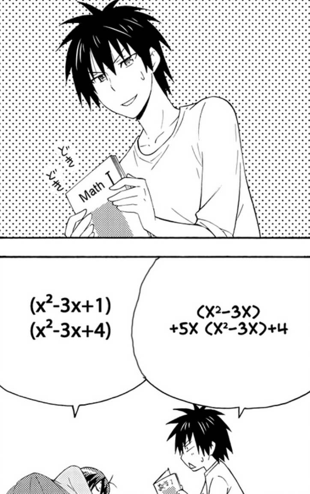
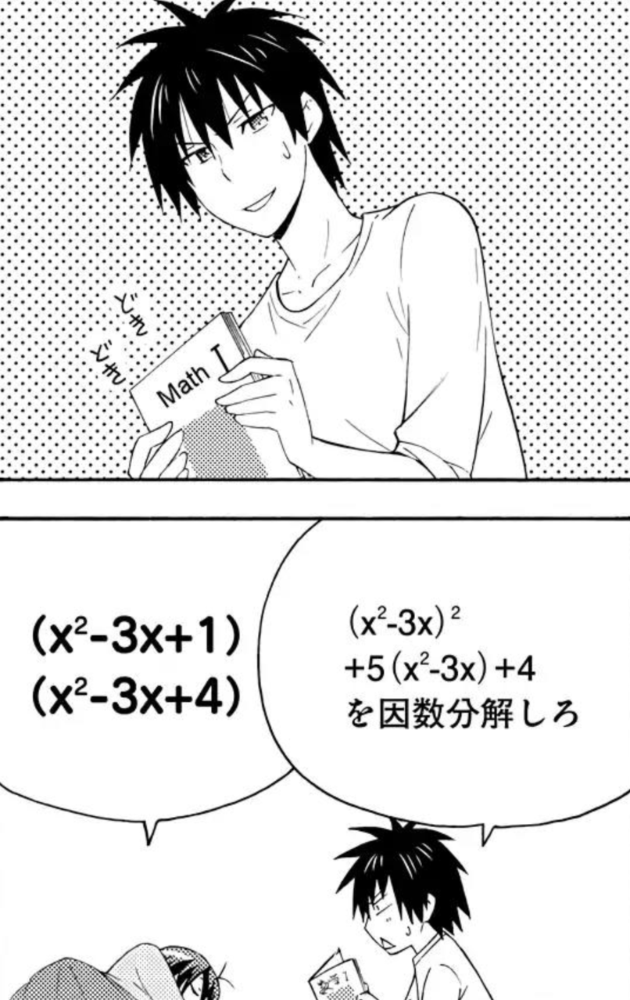

Incorrect Translation of a Math Problem in a Manga
July 24, 2025
Recently I have been slowly reading through Danchigai, a comedy and slice of life manga in French. Whenever there is a math or code displayed in anime or manga, I sometimes have the temptation to analyze the problem. In chapter 27, the following problem was presented:

\[(x^2-3x)+5x(x^2-3x)+4 = (x^2-3x+1)(x^2-3x+4)\]It is immediately obvious that there is a mistake during the fan-made scanlation of the manga from Japanese to French. In the original question, $(x^2-3x)+5x(x^2-4x)+4$, the highest order (degree) is 3 but the reported answer has the order of 4.
So I decided to take a look at the fan-made English scanlation and notice that the scanlator left the question in its original form:

With the original question unmodified from the Japanese source, we can now verify the answer:
\[\begin{align*} (x^2-3x)^2 + 5(x^2-3x) + 4 &= u^2 + 5u + 4 \quad \text{, } u = x^2-3x \\ &= (u+1)(u+4) \\ &= (x^2-3x+1)(x^2-3x+4) \quad \text{ as desired} \end{align*}\]